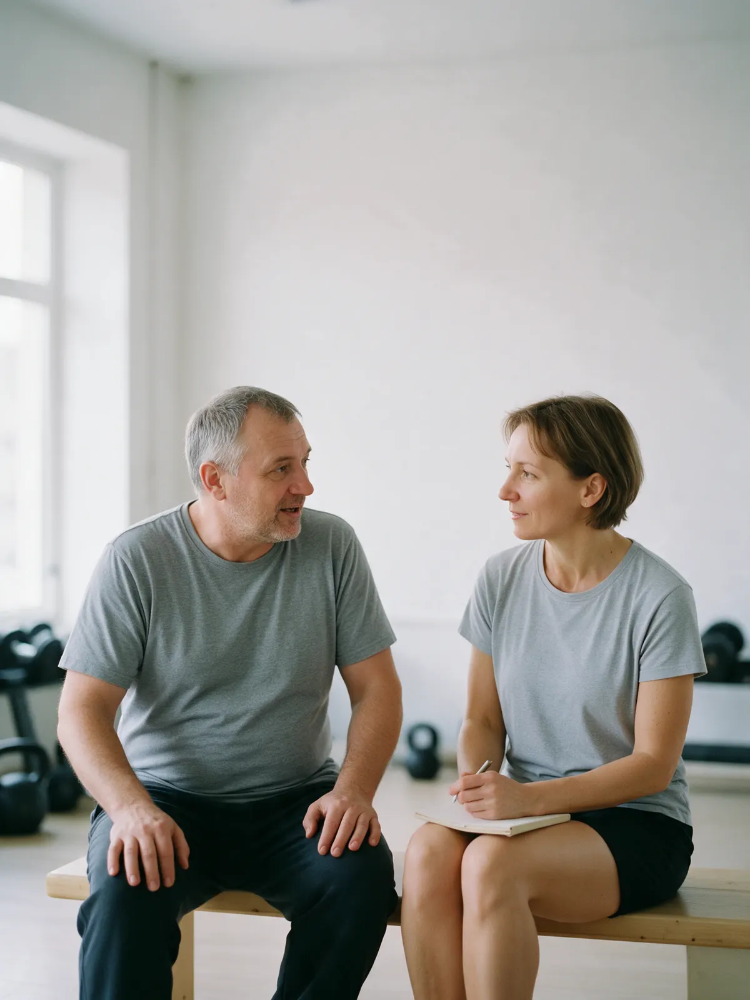
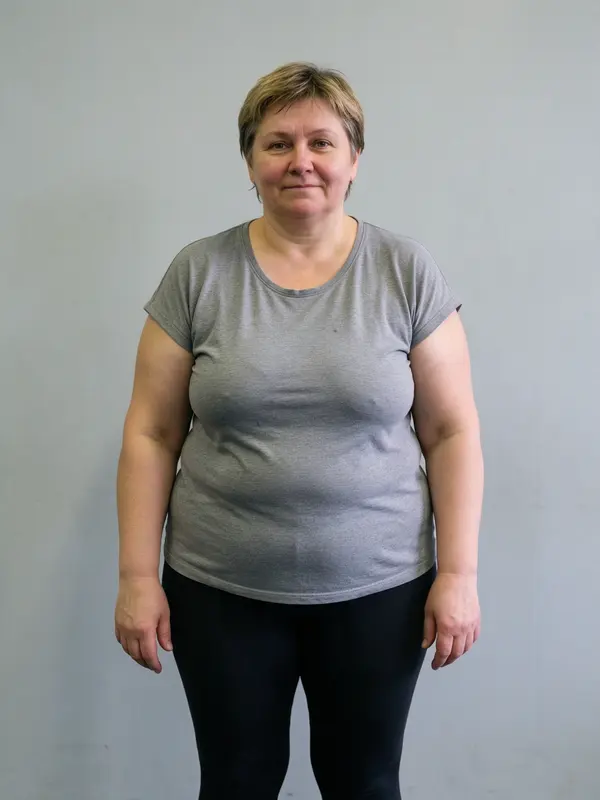
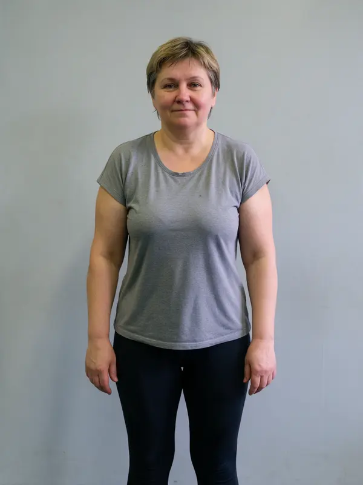
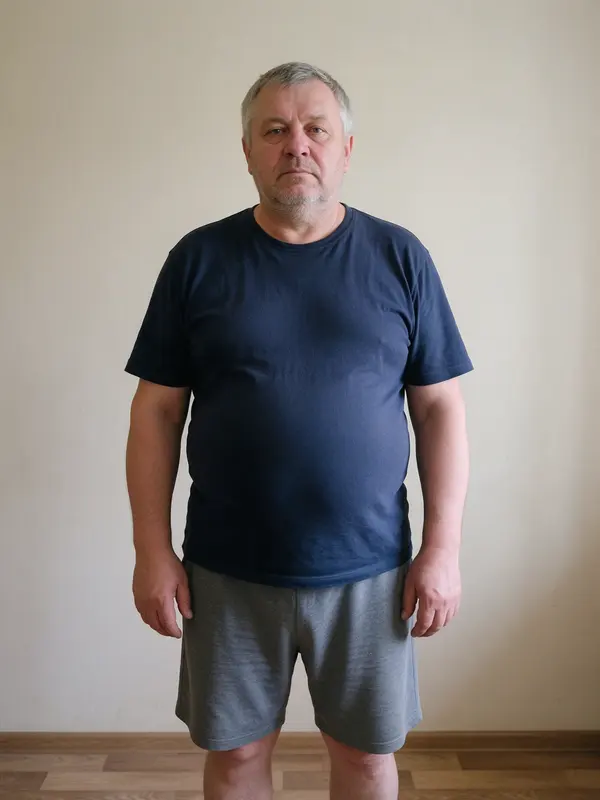
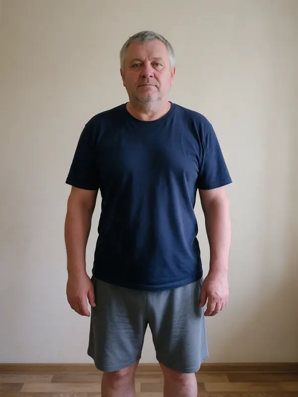
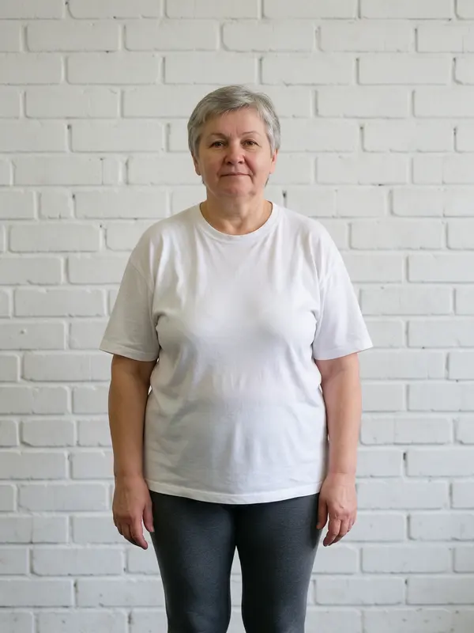
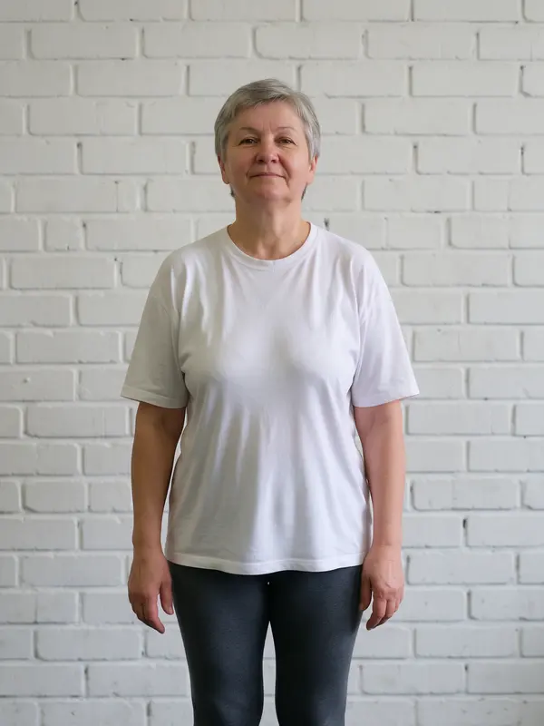
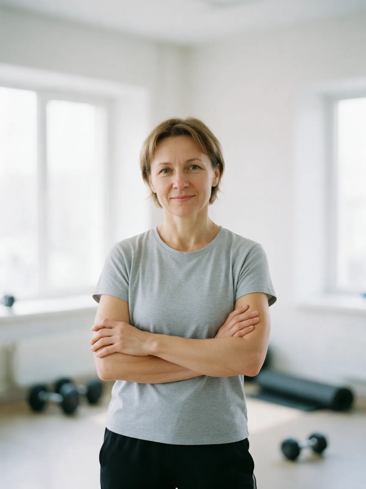
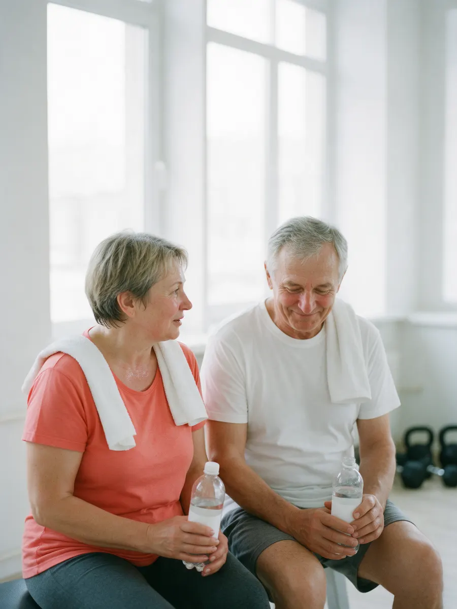

Демо для Виталия · по заказу «Создать одностраничник на тильде»
{{название студии}} · студия тренировок 45+Тренировки 45+ в {{город}} – приходите как есть
Опыт и форма не нужны. Начните с пробной: разговор о самочувствии, техника, нагрузка по силам. Без гонки и рекордов.
Кажется, что зал – не для вас. Это не так
В обычном зале – как чужой
Вокруг двадцатилетние, громкая музыка, тренер не понимает, зачем вам это. Хочется уйти после первой же тренировки.
Страшно навредить себе
Спина, колени, давление – непонятно, что можно, а что нет. Спросить неловко, а делать «как все» не хочется.
«Поздно начинать»
Кажется, момент упущен. Но начать двигаться можно в любом возрасте – просто нагрузка нужна своя, а не как у спортсменов.
Здесь тренируются те, кому 45+. Первая тренировка – разговор о самочувствии, техника на лёгком весе, нагрузка по силам. Тренер рядом всю тренировку и видит, когда пора сбавить темп. Уходите с планом под цель и график – и с ценой, которую знали заранее.

По шагам, без сюрпризов
Занимает {{длительность-пробной}}. Опыт не нужен: удобная одежда, кроссовки, вода – остальное здесь.
- 1
Сначала говорим: самочувствие, цель, график
Что беспокоит, какие есть ограничения или рекомендации врача, сколько дней в неделю удобно. Без осуждения.
- 2
Разминка и техника на лёгком весе
Как приседать, вставать и держать спину. Вес и темп такие, чтобы думать о технике, а не о том, как выдержать.
- 3
Нагрузка по силам, тренер рядом каждый подход
Следим за дыханием и самочувствием, поправляем по ходу. Устали – меняем упражнение, а не терпим.
- 4
Уходите с планом под цель и график
Формат, дни, что делать между тренировками. Цена следующей известна до выхода.
Наутро – бодрость, а не «не встать с кровати». Рекордов не ставим и не обещаем. Если есть хронические заболевания, перед началом посоветуйтесь с врачом.
До и после – ученики студии
Три истории с разрешения самих учеников: с чего начинали и к чему пришли. Срок и результат у каждого свои – зависят от цели, самочувствия и графика.
Карточки переворачиваются по мере прокрутки: сначала «до», потом «после»
-


{{имя ученика 1}}{{срок 1}}
-


{{имя ученика 2}}{{срок 2}}
-


{{имя ученика 3}}{{срок 3}}
- Фото публикуем только с согласия учеников. Результат не обещаем цифрами: у каждого своя цель и свой темп.
Формат и цена – до первой тренировки
Цена за одну тренировку. Пакетом дешевле – сумму и срок действия назовём при записи. Пробная – отдельной строкой.
- Пробная тренировка{{длительность-пробной}}, знакомство: разговор про цель, техника, план{{цена}} ₽
- Групповая{{длительность}}, группа 45+ до {{мест-в-группе}} человек, тренер подходит к каждому{{цена}} ₽
- Персональная{{длительность}}, один на один, тренер рядом всю тренировку{{цена}} ₽
- Сплит – вдвоём{{длительность}}, с другом или партнёром, цена за каждого{{цена}} ₽
- Онлайн{{длительность}} по видеосвязи: техника, разбор, план под домашний инвентарь{{цена}} ₽
Условия переноса и срок действия пакета говорим при записи – до оплаты, а не после. Онлайн и в зале один и тот же тренер.

{{тренер}}
«Рядом всю тренировку» – это буквально: считает повторы, поправляет технику, меняет вес, когда видит, что пора.
- Образование{{образование}}
- Опыт{{опыт}}
- Специализация{{специализация}}
- ФорматВ группе, персонально и онлайн
- С кем работает
- Вернуться к движению после долгого перерыва – с нагрузки по силам
- Окрепнуть – чтобы спина и колени реже напоминали о себе
- Сохранить силу, равновесие и бодрость на годы вперёд
Что пишут на Яндекс.Картах
Отзывы скопированы с карточки на Яндекс.Картах без правок.
-
«{{отзыв 1}}»
-
«{{отзыв 2}}»
-
«{{отзыв 3}}»
Запишитесь на пробную – и приходите как есть
Напишите, какая цель и какие дни удобны. Ответим временем, форматом и ценой – до первой тренировки.
С собой: удобная одежда, кроссовки, вода. Опыт и «форма» не нужны – с этого и начинаем. Не любите писать – звоните.
